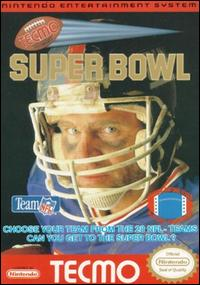

Individual Passing Records
Key:
Hover cursor over record to view player/team.
* asterisk symbol indicates manual count above in-game cap of 63 touchdowns.
+ plus symbol indicates maximum in-game yardage (4095).

Home
Individual Records
Passing Records
Rushing Records
Receiving & All-Purpose Records
Defense & Special Teams Records
Team Records
Single Season Team Records
Single Game Team Records
Notable Feats
Player Bios and Career Stats
Passer Rating Calculator
Gameplay Soundboard
Latest Season Standings:
Previous Season: